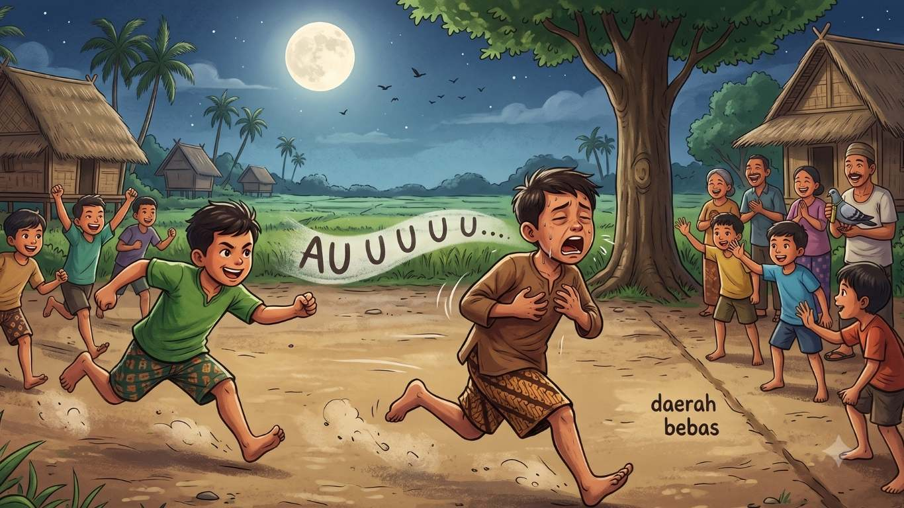
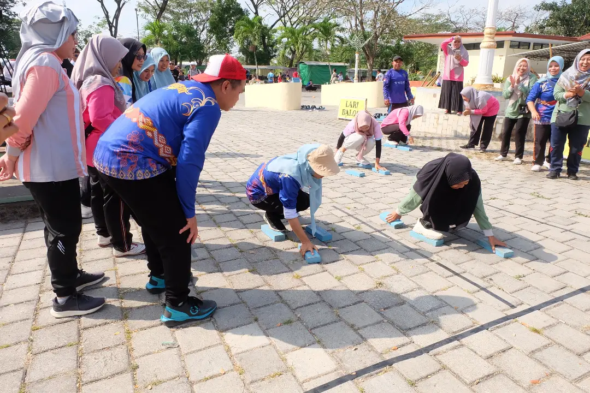
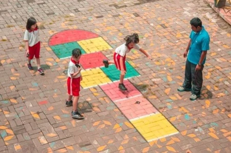
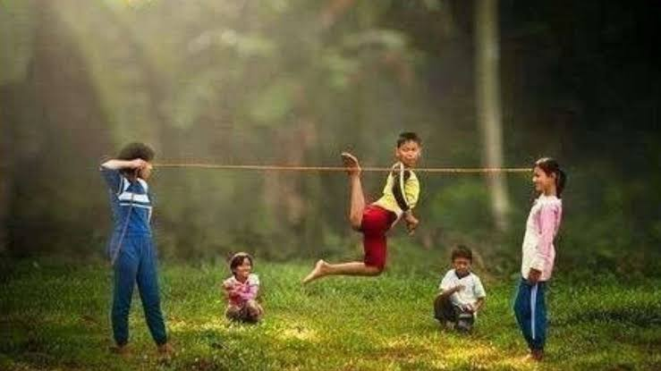
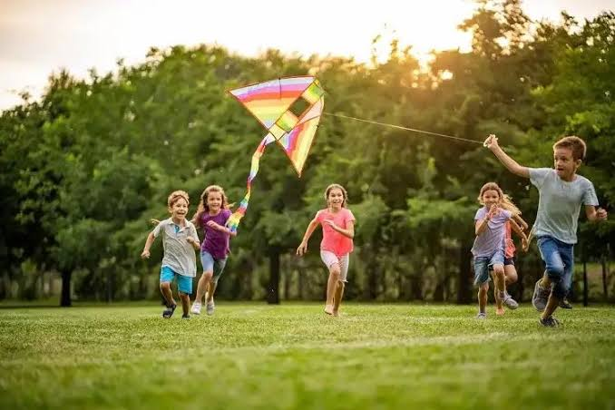
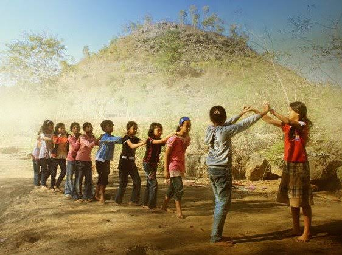

Jelajahi warisan leluhur kita. Pilih permainan di bawah ini untuk melihat sejarah dan tata cara bermainnya.


Adu ketangkasan petarung Sasak menggunakan tongkat rotan dan perisai.
Cara Bermain →
Permainan regu memukul dan menangkap bola kasti dengan teknik khusus.
Cara Bermain →




Adu cepat melangkah di atas balok kayu tanpa menyentuh tanah.
Cara Bermain →

Melompat dengan satu kaki di atas kotak-kotak untuk menguji keseimbangan.
Cara Bermain →
Melompati tali dari karet gelang yang levelnya terus bertambah tinggi.
Cara Bermain →
Permainan strategi beregu untuk merebut benteng dan menawan lawan.
Cara Bermain →

Adu kekuatan dan kekompakan beregu untuk menarik tali.
Cara Bermain →

Gotong royong memanjat tiang licin untuk meraih hadiah di puncak.
Cara Bermain →